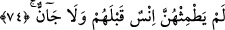

74. Bunlara onlardan önce ne bir insan ne bir cin dokunmuştur.
Her yönüyle daha önce geçen benzeri elli altıncı âyet-i kerîmenin açıklaması gibidir.
Bazıları demişlerdir ki, “onlardan önce “cümlesinden maksad, yâni iki cennet
sâhiplerinden önce, demektir. İki cennetin zikredilmiş olması onları göstermektedir.
Keşfü’l-esrâr’da, bu âyet-i kerîme teşvik ve imrendirmeyi artırmak için tekrar
edilmiştir. Yine aynı eserde, önceki âyette mukarrebînin eşleri, bu ise iyilerin eşleri
hakkında olduğu için tekrar sayılmayabilir, denilmiştir.
Muhammed b. Ka’b demiştir ki; mümin, bin tane dul, bin tane bâkire ve bin tane hûrî
ile evlendirilir.
75. Öyleyken Rabbinizin hangi nimetlerini yalanlayabilirsiniz?
Bu nimetler dünya nimetleri gibi değildir. Dünya kadını ile bazan evlenip temas edilir,
sonra o kadını bir başkası dul olarak nikahlar. Bu cennet kadınları, sâhipleri için bâkire
olarak verilecek nimetlerdir. Onlara kavuşmak ne güzeldir. Hiç kimse onların
güzelliklerini anlatamaz. Hiç bir anlatım onların güzelliklerini anlatmaya yetmez.
Akıllar güzellikleri karşısında şaşkın, gönüller güzellikleriyle sarhoştur.
76. Yeşil yastıklara ve hârikulâde güzel döşemelere yaslanırlar.
“
/Rafraf”ın, “ince ve değerli kumaşın, taht veya sedirin eteği, sarkan kısmı, saçağı
veya yastığın, döşemenin, yaygının bir çeşidi” olduğu söylenmiştir.
Müfredât adlı eserde bahçelere benzetilerek “dokunmuş bir çeşit kumaştır”,
denilmiştir. Rafraf’ın mânâlarından biri de, “bahçeler” demektir.
Enüşirevân’ın döşeği, yaygısı altmış zira eninde, altmış zira boyunda ve genişliğinde
olup köşkünün sofası ilk bahar çiçekleri renginde inci, mercan ve cevherlerrden
işlenerek döşenirdi. Çiçekler kalmadığı zamanlarda döşenirdi.
Kamus’ta denilmiştir ki; “rafraf”, “yeşil bir kumaş olup ondan çarşaf, yatak örtüsü
yapılıp döşenir. Yatak ve yatak kılıfından fazla gelen, sarkan kısımdır”. Atlas, ipeğin
incesine ve döşeğe denir.
“
/Abkariyy”, “harikulade şeye mensub” demektir. Araplar cinleri çok olan bir
beldenin ismi olduğunu söyler ve hayret verici her şeyi oraya nisbet ederler.